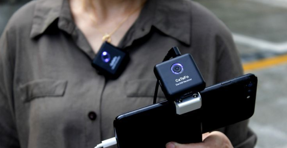

What is Equipments
Photography and videography equipment refers to the tools and devices that enable the creation, enhancement, and refinement of visual and audio content. These tools are essential for capturing moments, telling stories, and producing high-quality images or videos. They encompass everything from the main devices used to record footage to the accessories and software that support and enhance the creative process. This equipment is fundamental for both amateurs and professionals, as it ensures the ability to achieve desired visual and auditory effects, translating creative visions into polished, impactful results./p>
Importance of Equipments
Equipment plays a crucial role in filmmaking as it directly impacts the quality and execution of your vision. Cameras, lights, microphones, and editing tools help bring your story to life by ensuring high-quality visuals, clear audio, and smooth transitions. Proper equipment allows filmmakers to experiment with angles, lighting, and effects, enhancing the emotional and visual appeal of the project. Even with basic tools, such as a smartphone and DIY props, having the right equipment enables you to maintain consistency, reduce errors during production, and achieve a professional look. Ultimately, equipment is the bridge between creativity and reality, helping you effectively communicate your story to the audience.
Microphones
Microphones, such as lavalier mics, shotgun mics, or condenser mics, are often used in filmmaking to ensure better sound quality than the built-in microphones on cameras or smartphones. They help reduce background noise and focus on the desired audio source, making them vital for interviews, dialogue, and sound design in video production.


Natural Light
Is a cost-effective "equipment" for videography, offering free, high-quality illumination. Use sunlight strategically, such as near windows or during golden hours, for soft, flattering light. Reflectors like white boards or foil can enhance its effectiveness, providing an organic, budget-friendly way to create stunning visuals.